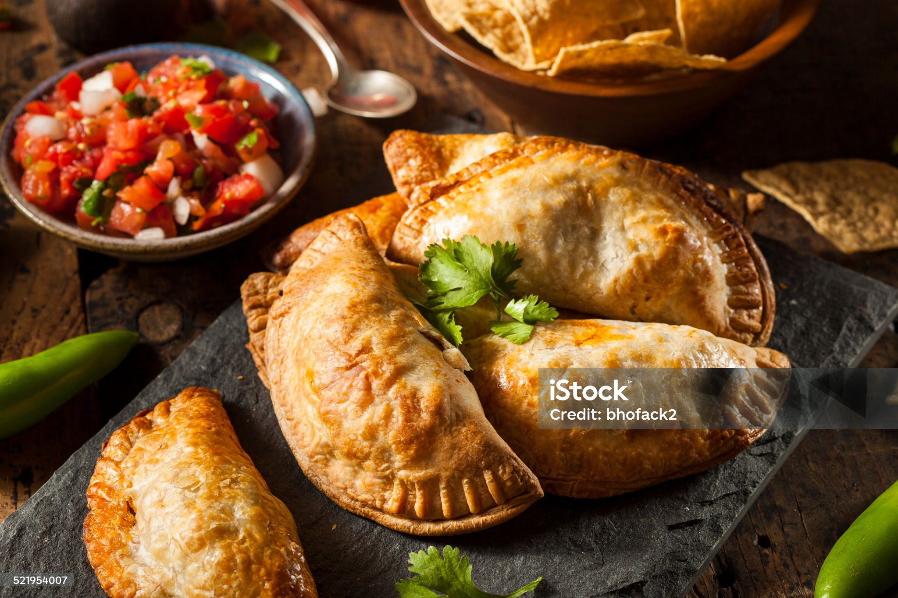

Empanadas
 1108 kcal
1108 kcal| 750g Mehl | 250g Margarine |
| 500 ml Brühe | 1 TL Salz |
| 2 Ziebel(n),rote,gehackt | 2 Knoblauchzehe(n),klein gehackt |
| 1 EL Paprikepulver, edelsüßes | Salz und Pfeffer |
| 3 Eigelb | ½ Dose Kichererbsen, (ca.150g) |
| 2Ei(er), hart gekocht | ½ Dose Mais(150g) |
| 1/2 Dose Öl oder Margarine | 1 Paprikaschote(n), in kleine Stücke geschnitten |
| 150 g Erbsen TK |
Zubereitung
ca. 15 Minuten Gesamtzeit ca. 15 Minuten
Für den Teig Margarine, Mehl und Salz in eine Schüssel geben. Kellenweise Brühe dazugeben und kneten,
bis sich eine feste,
nicht brüchige Masse bildet. Diese kann dann später dünn ausgerollt und in Kreisen à 12 cm Durchmesser
ausgestochen werden.
Kichererbsen und Mais abgießen. Die Eier pellen und in kleine Stückchen schneiden.
Für die Füllung Öl oder Margarine in einer Pfanne erhitzen. Gehackte Zwiebeln und Knoblauch dazugeben
und andünsten, bis die Zwiebeln glasig werden. Mit dem Gemüse (Paprikastückchen,
Kichererbsen, Mais, Erbsen) und den Eiern mischen und 1,5 Minuten in die Mikrowelle erhitzen. Mit
Paprika, Salz und Pfeffer würzen.
Ca. zwei Esslöffel der Füllung auf eine Hälfte jeden Teigkreises geben. Rand mit Eigelb bestreichen.
Zusammenklappen und dann die
Empanadas verschließen, indem man mit dem Zeigefinger der einen Hand die oberen (umgeklappten) Teig
andrückt und mit dem Zeigefinger
der anderen Hand ein wenig unter die untere (d.h. befüllte) Teighälfte geht und Stück für Stück beides
zusammen über Eck umklappt
(dabei von einer Seite des Halbkreises zur andern vorgehen).
Die Empanadas komplett mit Eigelb bestriechen bei 180 °C Umluft 15 - 20 Minuten im Backofen garen.